Step 2: Modeling Standards
Contents
Introduction
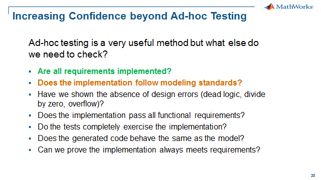
Model Advisor finds unwanted model properties, such as incorrect or deprecated blocks and block parameters, non-robust model constructs and other practices that do not facilitate consistentcy, readability and sharing. Model Advisor is a part of the Simulink basic functionality, but Simulink Check extends the Model Advisor capability by providing the user with pre-defined "checks" based on the following industry safety standards:
- ISO 26262 Checks
- IEC 61508 Checks
- IEC 62304 Checks
- EN 50128 Checks
- DO-178C and DO-331 Checks
A "check" in Model Advisor means a rule that the tool will use to examine your model and flag any settings that don't agree with the pre-defined criteria. The set of checks provided by Simulink Check can be seen under the By Product/Simulink Check folder.
MathWorks has created a set of modeling guidelines by leveraging industry best practices and the MathWorks expertise in developing high-integrity systems. These high-integrity guidelines have been interpreted into checks addressing the specifics of safety standards like ISO 26262. Each check includes a description, a rationale and an example where applicable.
Simulink Check also extends the Model Advisor capability by providing additional automotive model style guidelines:
- MathWorks Automotive Advisory Board Checks (MAAB Style Guidelines)
MathWorks Automotive Advisory Board (MAAB) checks facilitate designing and troubleshooting models from which code is generated for automotive applications. The MathWorks® Automotive Advisory Board (MAAB) involves major automotive OEMs and suppliers in the process of evolving MathWorks controls, simulation, and code generation products
In addition to the modeling standard checks listed above, Simulink Check provides the following functionality:
- Application program interface (API) for building custom checks.
- Model Metrics checks
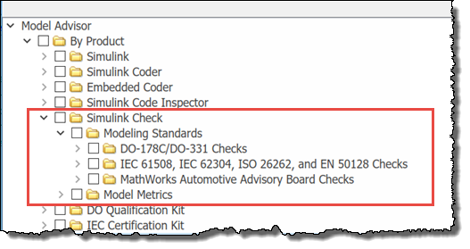
The Embedded Coder product also adds checks to Model Advisor:
- MISRA C:2012 Checks
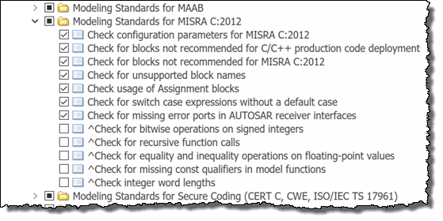
The "MISRA C:2012 Checks" check the model and code generation configuration for generating efficient production code. These checks identify configuration parameters that might impact MISRA C:2012 compliant code generation to increass the likelihood of generating MISRA C:2012 compliant code. The final check for MISRA C:2012 would be performed by Polyspace, a static analysis tool that analyzes the generated code.
Verification and Validation Tools Used
- Simulink Check
Using Edit Time Checking
Model Advisor has a comprehensive set of checks that can be used to verify the model has been constructed and configured to ensure standards compliance as discussed above. What if we could perform these checks earlier in the development process? It is possible to perform a subset of these checks to detect compliance issues at design time. There is a feature called edit-time checking that will check the model as it is being design or constructed. To enable edit-time checking, do the following:
- Open the CruiseControl_Req.slx – click here
- Go to Analysis/Model Advisor/Model Advisor/Display Advisor Checks in Editor
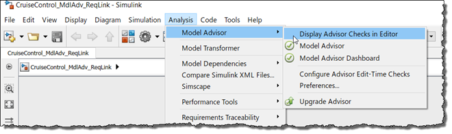
After edit-time checking has been enabled, the checks have been automatically run and the results displayed on the model canvas.
Note the name violation found for the subsystem "Compute target speed". To fix the violation:
- Remove the spaces in the block name by renaming the block to "ComputeTargetSpeed"
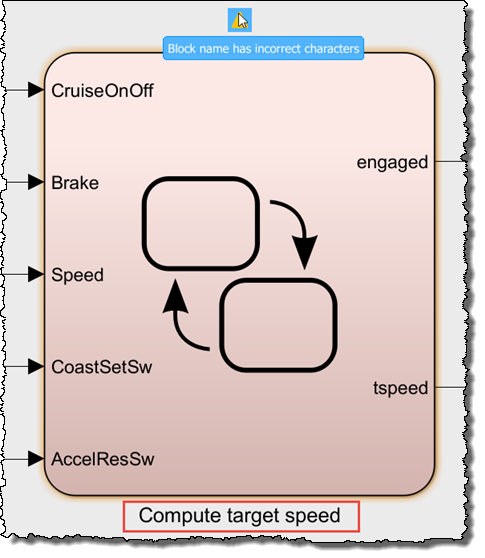
Open the state chart to find another violation regarding the "ON" state. To fix the violation:
- Add a CR to place "engaged = true;" on a separate line.
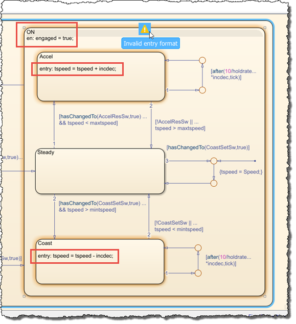
Notice the "Accel" and "Coast" states have the same issue with the same fix:
- For the "Accel" state, add a CR to place "tspeed = tspeed + incdec;" on a separate line.
- For the "Coast" state, add a CR to place "tspeed = tspeed - incdec;" on a separate line.
All issues identified by Edit Time Checking have been fixed. Next we will use the Metrics Dashboard to perform a more detailed standards compliance check.
Opening the Metrics Dashboard
For the all of the checks including the edit-time checks we will use the Metrics Dashboard to determine and demonstrate if the model is in compliance with
- ISO 26262
- MAAB Style Guidelines
- MISRA C:2012
The Metrics Dashboard collects and integrates quality metric data from multiple Model-Based Design tools to provide you with an assessment of your project quality status. The Metrics Dashboard contains widgets that provide visualization of metric data in these categories: size, modeling guideline compliance, and architecture.
Before we open the Metrics Dashboard, we will run a script to configure the dashboard to obtain compliance metrics for ISO 26262, MAAB and MISRA.
1. Configure the Metrics Dashboard – click here
2. If not opened, open the CruiseControl_Req.slx model – click here
If opened, model changes from the edit-time checking section will be lost.
3. To open the Metrics Dashboard, make the menu selection Analysis/Metrics Dashboard
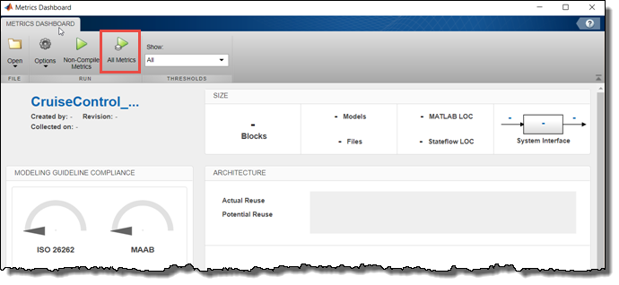
4. Select All Metrics to analyze the model for standards compliance.
A progress bar will popup to show what checks are being executed. Once completed the compliance metrics will be shown on the Metrics Dashboard.
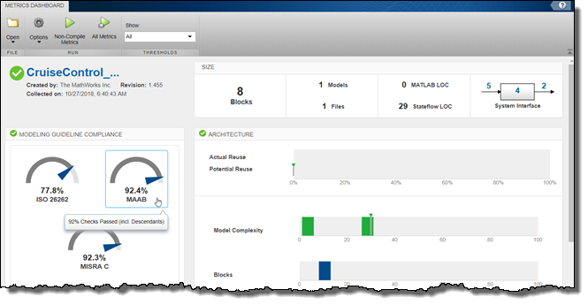
To get help with understanding, interpreting and using the Metrics Dashboard - click here and here.
From the dashboard metrics our model is (92.4%) MAAB compliant. We will now drill down into the MAAB results, fix the issues and demonstrate 100% MAAB compliance.
5. To drill down into the MAAB results, select the "MAAB" gauge to bring up the Metrics Details view.

The Metrics Details starts in the Grid view. This can be very useful for integrations of a large number of components or models to see how many components are non-compliant and if the issues are localized or across the organization. In our case we are analyzing a single component so we will proceed to the Table view with an itemized list of issues.
6. Select Table in the toolstrip to show the list of issues.
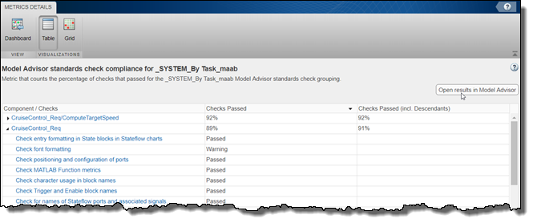
Fixing the Non-Compliant Checks
We will use Model Advisor to determine the cause of the non-compliance and fix the issues.
1. From the Metrics Detail view, select Open results in Model Advisor to open Model Advisor.
Before we investigate and fix these issues we need to create a restore point so if we decide on a different strategy to handle these issues then we can easily go back to our last "good" model.
2. To create a restore point in Model Advisor, select File/Save Restore Point
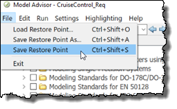
3. In the Metrics Dashboard select "Check font formatting"
Model Advisor will show the "Check font formatting" check within the "Modeling Standards for MAAB/Simulink" section.

Note: Your list of checks might be slightly different than the screen shot. The list of checks is a function of installed products.
There are (6) warnings* for the "MAAB Checks". Let's take a look at what is causing these warning messages:
- Check font formatting-- usage of two font sizes in model; consistency
- Check model diagnostic parameters-- (2) diagnostics need to be set to warning or error; workflow, code generation
- Check for diagram using nonstandard display attributes-- several issues, use Modify button to fix; consistency
- Check for propagated signal labels-- outport signals need to be set for label propagation; readability, code generation, verification & validation
- Check default transition placement in Stateflow charts-- default state not the top-most state; readability
- Check for comparison operations in Stateflow charts-- value is not cast to the same type as the signal (uint8), change to tspeed!=uint8(0): code generation, verification & validation
For more detail on any check, select the Help button in the Model Advisor check pane. You can also download the MAAB style guide from the web for more detailed information.
4. First, let's fix "Check font formatting" by
- Selecting Run This Check
- Selecting Modify All Fonts
- Selecting Run This Check
The "Check font formatting" check should now pass.
Follow this general method to fix the remaining checks except for "Check default transition placement in Stateflow charts". For this check we will use an exclusion method. For the other checks, after Run This Check there will typically be some type of a "Fix It" button or hyperlinks to navigate to the violation in the model or configuration where the fix can manually be made.
5. In Model Advisor, navigate through the non-compliant "MAAB" checks to fix all the checks using the hints above. Excluding "Check default transition placement in Stateflow charts" do this for the remaining checks.
Excluding Blocks from Model Advisor Analysis
If you want to exclude a check, you simply uncheck it and it will be exluded from the analysis. You can also put together a custom list of checks to only run those that you think make sense for you. This is covered in the last section of this step.
However, sometimes you want to run a check on a model, but exclude only specific blocks or specific block types from all checks or individual checks. This is required to show (100%) compliance in the Metrics Dashboard. The Check default transition placement in Stateflow charts is a good candidate for exclusion since this may require a major rework of the the Stateflow chart. We will now show how to exclude this block to enable us to pass all the MAAB checks. We would likely still have to justify this during the model review but as we will see the use of exclusion is documented in the final report.
1. In Model Advisor, navigate to the "Stateflow" section and select Check default transition placement in Stateflow charts
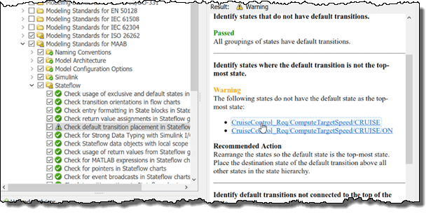
The Recommended Action is to rearrange the states so the default state is the top-most state. Place the destination state of the default transition above all other states in the state hierarchy. However, let's say that we approve this deviation from the MAAB standard for our model. To do this, follow the steps below:
2. Select one of the non-compliant states to navigate to the model
3. Navigate up one level and select the state chart
4. Right-click the state chart block and select Model Advisor/Exclude block only/Select checks ...
5. Find Check default transition placement in Stateflow charts in the list box. Look at the relative position in the list box to help find the check (see picture below):
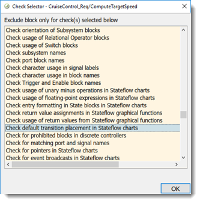
This opens the Model Advisor Exclusion Editor
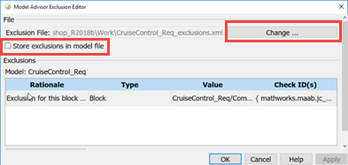
6. Click the Change button to name the exclusion file
7. Click Save as in the dialog that appears, name the file CruiseControl_Req_exclusions.xml
8. Rerun the check Check default transition placement in Stateflow charts under Model Architecture to confirm that this check now passes.
9. Return to the Metrics Dashboard and select Dashboard in the toolstrip to return to the dashboard view.
10. Run All Metrics to confirm (100%) MAAB compliance.
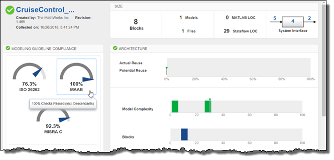
Adding Custom Checks to Model Advisor
As mentioned at the beginning of this section, Simulink Check allows users to add customized checks to Model Advisor. This is done through the Model Advisor API and the sl_customization.m file. For this workshop, three new custom checks will be added based on the MATLAB code in sl_customization.m file.
To use custom checks do the following:
1. Close Model Advisor and the Metrics Dashboard
2. Save CruiseControl_Req.slx – click here
3. Close all model files – click here
4. Setup the sl_customization.m file – click here (this copies sl_customization.m into the working dir)
5. To view sl_customization.m - click here
6. At the MATLAB command prompt, enter the following command:
>> Advisor.Manager.refresh_customizations or click here
7. Open the CruiseControl_Req.slx – click here
8. Configure the Metrics Dashboard for the new custom checks – click here
9. Re-open the Metrics Dashboard.
10. Select All Metrics to run all metrics including the new custom checks
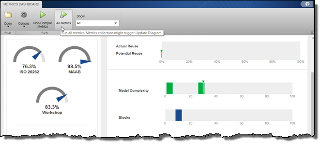
Notice the third gauge has been reassigned from "MISRA" to "Workshop" to indicate the status of the custom checks.
11. Select the "Workshop" gauge to open Metrics Details view.
12. Select "Open results in Model Advisor" to see the custom checks in Model Advisor
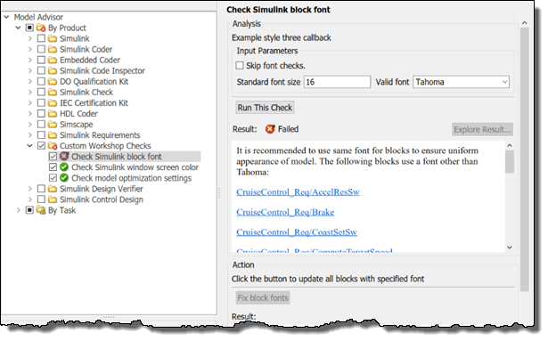
A new folder has appeared under By Product named Custom Workshop Checks The folder contains the 3 custom checks:
- Check Simulink block font
- Check Simulink window screen color
- Check model optimization settings
13. Run through all three of these custom checks and notice the different displays and fix actions for each check.
In some cases, it is possible have a "*Fix ...*" action, in which Model Advisor would follow a pre-defined or programmed fix action to correct the model for you. Since font type and size have a very "objective" procedure to fix the model, we can implement a "*Fix ...*" action.
These checks were scripted in MATLAB using the Model Advisor API commands, and added to the Model Advisor UI using the "sl_customization.m" file. When "sl_customization.m" changes, the UI must be refreshed with the Advisor.Manager.refresh_customizations command.
Customizing Model Advisor Menu
In addition to being able to add your own checks, you can also configure the Model Advisor menu with different folders, or different initial check configurations (enable/disable/hidden).
Do the following:
1. Open Model Advisor and select the menu Settings/Open Configuration Editor.
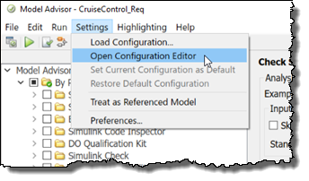
You should see the following windows open up:
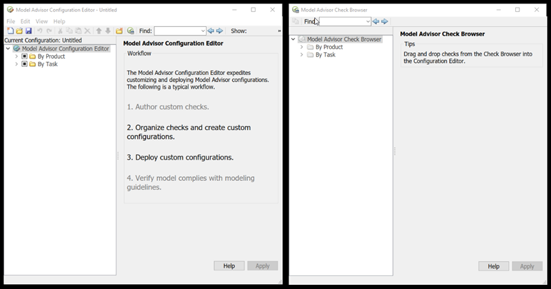
You can now modify (drag and drop) the check tree structure in the left-hand window using the checks available in the right-hand window.
2. Drag and drop check from Right (Source) window to the Left (Destination) window.
3. Create and delete folders in the left window.
4. Enable or disable specific checks in the left window.
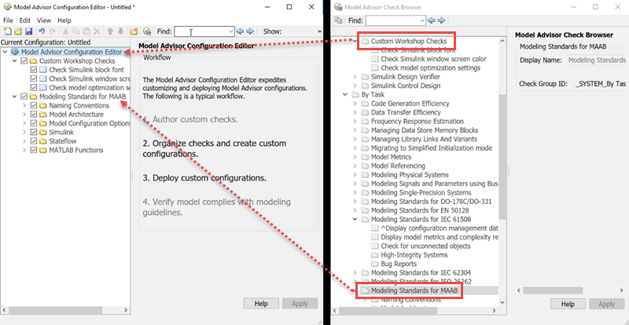
Once you are done, you can save the configuration as a .mat file, and share the configuration setting with others.
5. Select File/Save As and save the configuration as CruiseControl_MA_Config.mat.
Now that you have a custom Model Advisor configuration, let's use it.
7. Select File/Set Current Configuration as Default, also press OK to warning popup
8. Exit the Model Advisor Configuration Editor and reopen Model Advisor
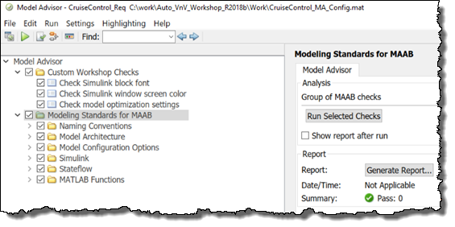
9. Another way to load your custom Model Advisor configuration -- In the Model Advisor window, under Settings, select Load Configuration...
10. To restore default settings -- In Model Advisor window, under Settings, select Restore Default Configuration.
Summary
With the functions above, we were able to check our Cruise Control model for compliance with industry, international and company standards, and best practices. We were able to carry out this task using the base Simulink, Model Advisor tool along with the modeling standards checks provided by Simulink Verification and Validation.
In the exercises we demonstrated compliance to the MAAB modeling standard. The benefits of complying to the MAAB modeling standard include readability, making the model production code ready, facilitating a standard V&V workflow and enabling re-use. Additional checks for complying to a safety standard like ISO 26262 are also available to be used as part of an overall process to demonstrate ISO 26262 compliance. The safety standards were not part of the exercises but the same procedure used in the MAAB exercises would apply to demonstrating compliance to the safety standard.
The standards checking can be customized to fit your model-based design process. Methods used to provide this customization to your process were also demonstrated:
- Custom checks can be created to check models for internal modeling standards
- Custom model checking configurations can include only the checks that apply or provide benefit to your workflow
Going forward we have increased confidence in our design knowing that are model follows a modeling standard. We have now answered all the questions as we have now demonstrated a structured and formal testing framework for securing the quality, robustness and safety of our cruise controller.
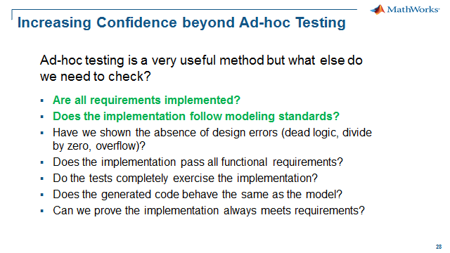
- Close all models - click here.
- Go to Step 3: Detecting Design Errors - click here.